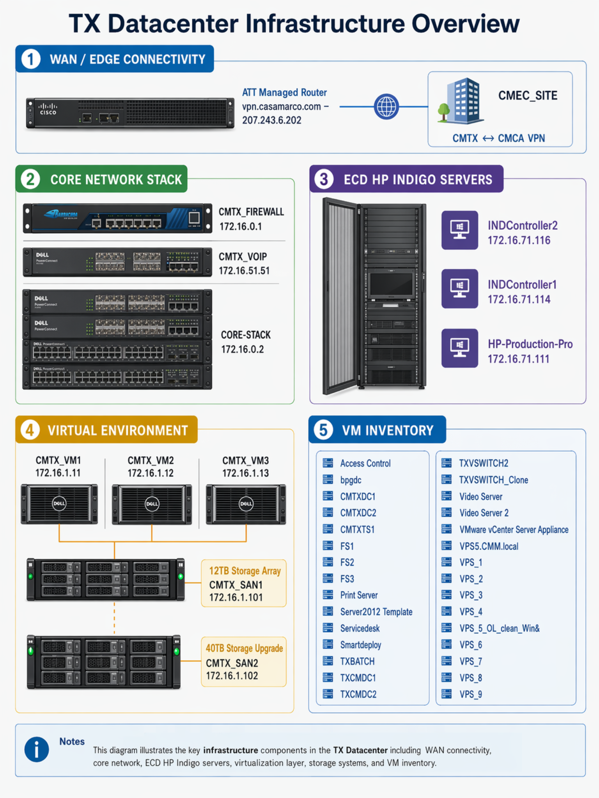
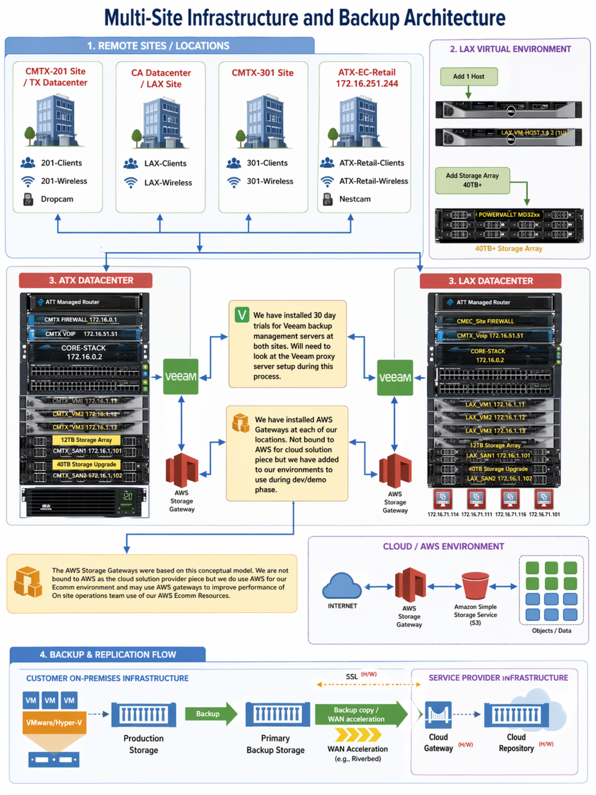
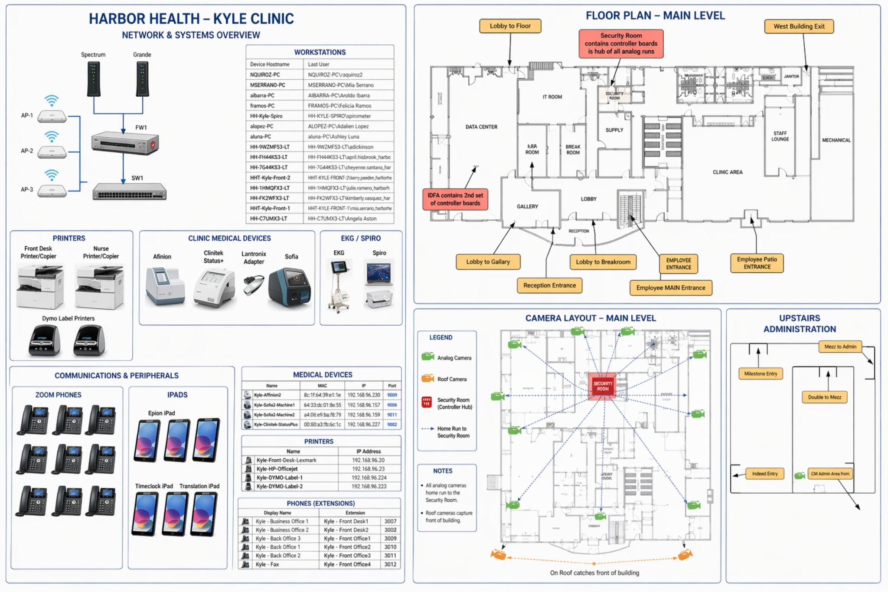
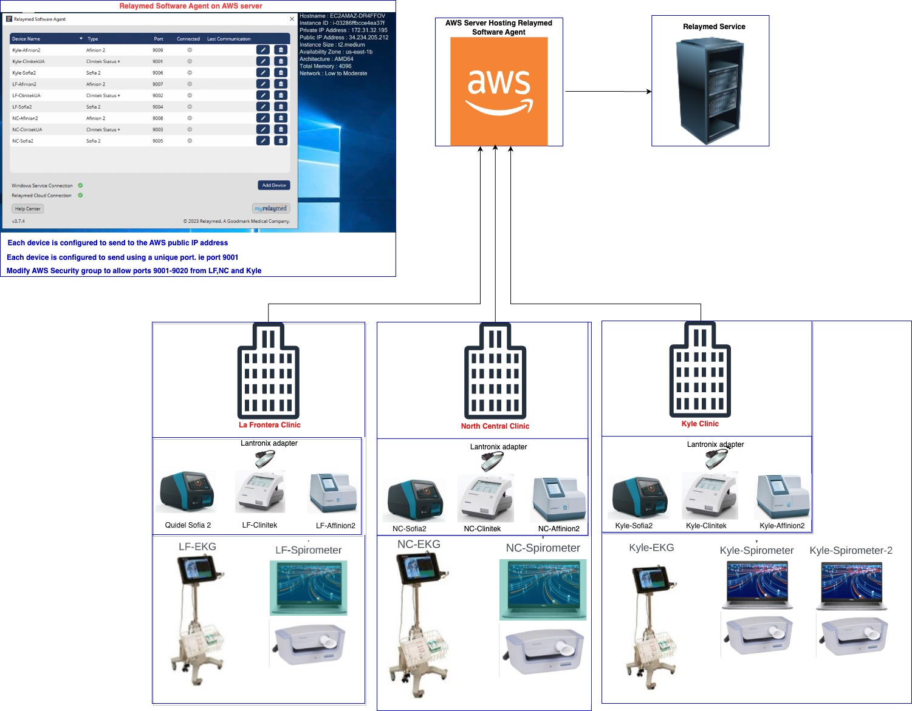
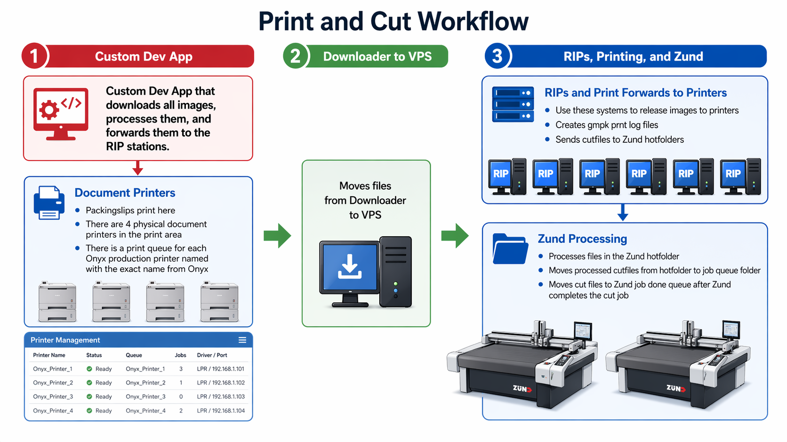
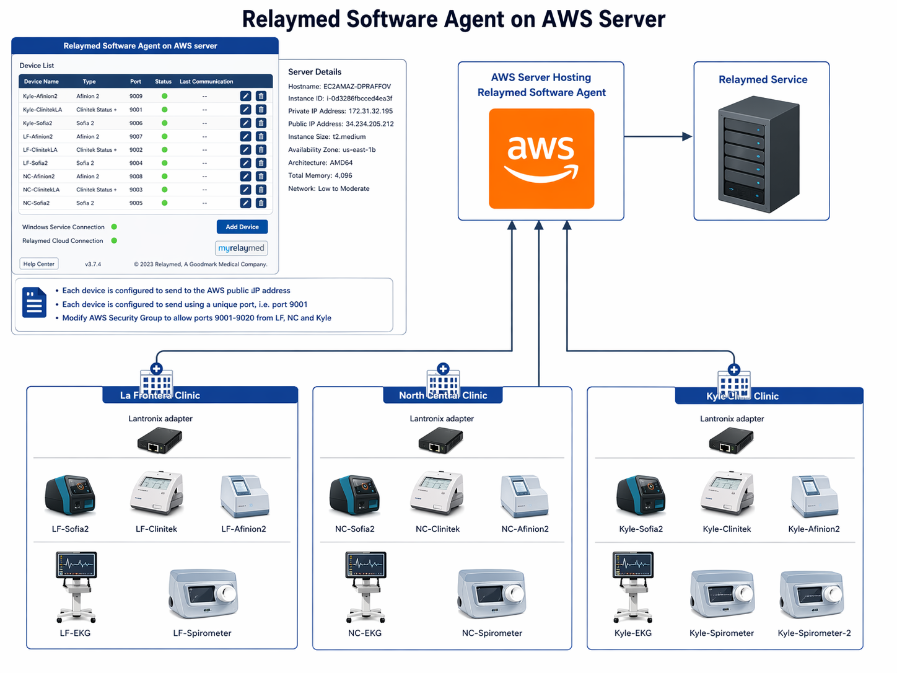
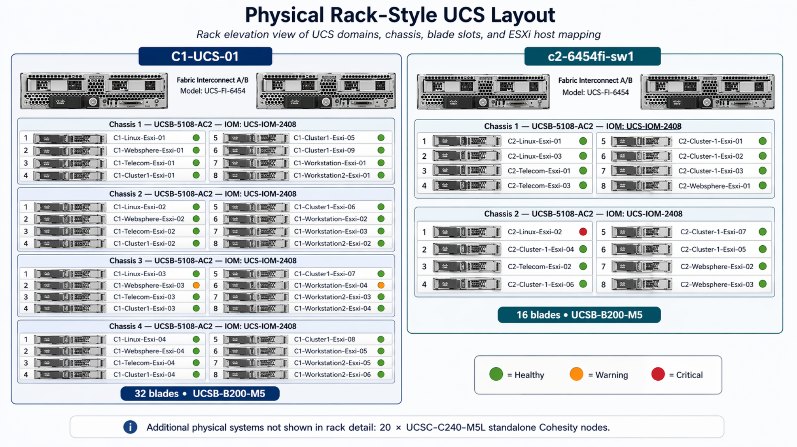
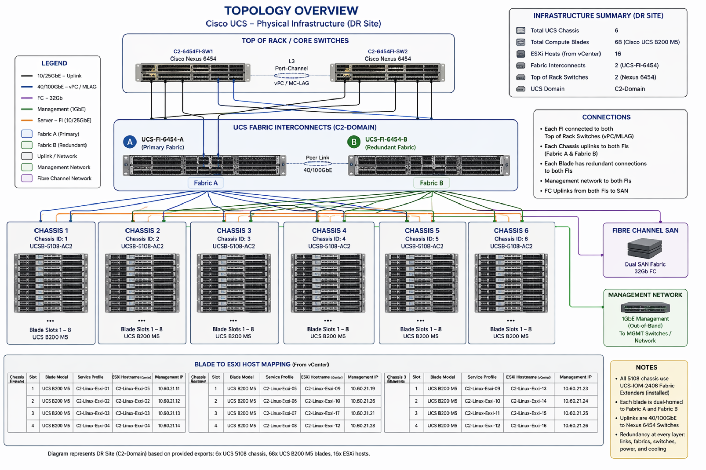

Infrastructure work — the real ones.
Diagrams, topology views, migration artifacts, and audit outputs from actual environments. Some are client deliverables (redacted where necessary); some are lab work that later became reusable templates.
OpenShift migration program.
Production and DR vCenter analysis (RVTools), UCS health audit across 68 blades, Jira-import CSV for modernization backlog, POC runbook targeting the C2-WebSphere-Cluster for Single Node OpenShift, OpenShift working session with Red Hat engineering. Findings surfaced expiring SSL certificates, multipath storage failures, dead boot LUNs, and a critically unhealthy UCS node — all of which shaped the migration wave plan.
Infrastructure health reports
RVTools-derived reports covering both vCenter environments, host-level drill, storage paths, certificate expiries, boot-LUN status.
Jira-import CSV
Structured backlog for the modernization program — every finding becomes a ticket with priority, workstream, and owner hints.
POC runbook (SNO)
Single Node OpenShift POC on the C2-WebSphere-Cluster target — prerequisites, sequence, rollback posture.
Migration wave plan
24–36 month horizon, workload-class banding, dependency sequencing.
Representative work, documented.
TX Datacenter & Virtual Environment
Core-stack, managed router, firewall, VoIP, HP Indigo systems, virtual infra — documented in a single reference.
TX / CA / LAX Site Architecture
Regional sites, datacenters, branch presence, cross-site workflow dependencies.
Harbor Health Multi-Clinic Footprint
Standardized site topology — clinics, call center, HQ, mobile units.
Support & Migration Reference
On-prem to virtual to cloud gateway, backup flows, migration-readiness mapping.
MFA Print & Onyx VPS Pipeline
Downloaders, RIP stations, forwarding, packing slips, Zund cut-queue integration.
Facility Access Control
Entry points, control-board hubs, readers, locking mechanisms for secure ops handoff.
Visualizing infrastructure stories
Selected diagrams from past engagements. Each illustrates how a real environment was structured and how services were connected across datacenters, clinics, and cloud providers. These visuals were originally delivered as client-ready artifacts and are reproduced here with proprietary details removed.









